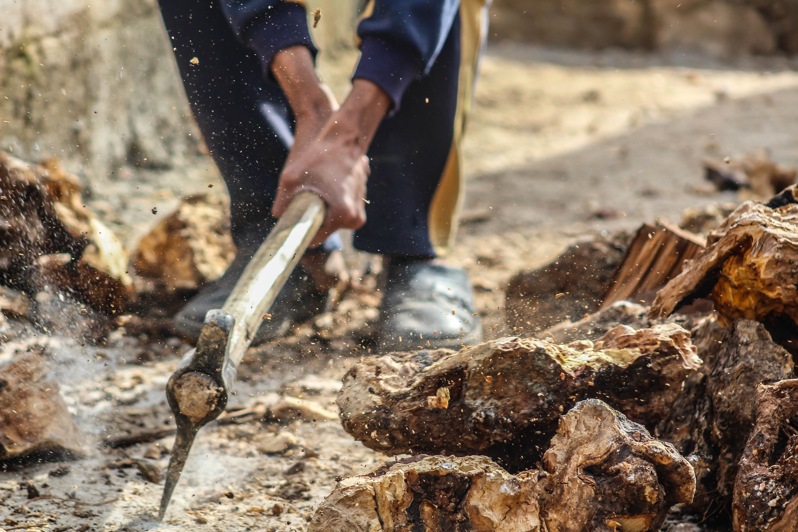

Professions to consider
There are many professions in World of Warcraft Classic. They all have different benefits, but for leveling up you should really only worry about the gathering professions and First Aid.
Skinning
- Skins aren't worth a lot on the auction house, but they vendor for a decent amount. It adds up.
- Skinning is a great profession if this is the first character you have and don't have any gold to help you while leveling up.
- You will need lots of gold leveling up for repairs/new skills/mounts/etc..., vendor your skins to save up.
- Mining can be great for saving up money as well.
- Sell ore/bars on auction house, don't vendor them.
- Mining is a good complement to engineering.
- You can make your own bullets!
- There are a ton of gadgets that can help you while leveling up.
- Powerful PvP utility if you are being attacked by other players a lot.
- Mandatory!
- Heal yourself during combat.
- Can often mean life or death during certain encounters!
If you are interested in leveling guides for professions I recommend using wow-professions.com